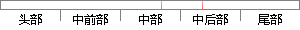

第一部分先过滤反向解析域名，域名反向解析是指从IP地址到域名的映射，其主要应用于邮件服务器阻止垃圾邮件。
片段位置图

相似结果|
相似片段 1：m结点，因为本地域名结点一定是可信的而内网IP结点没有参考价值。步骤4、5通过SPF过滤和反向DNS解析技术使得垃圾邮件制造者不能通过伪造垃圾邮件的发送P和域名而影响到真实邮件服务器的信誉。在步骤7中，对于
相似片段 2：都保存着合法的邮件服务器的域名和对应IP地址的记录，尽管垃圾邮件声称的域名可以伪造，但我们可以通过获取其通信的IP地址，进行DNS反向解析【91，得到其发送者真实的域名。如果通过DNS反向解析的域名与其声称
相似片段 3：发件人地址合法性检查等。反向DNS解析时，可以用IP跟域名一起查找匹配的方法来降低漏报率，针对有些邮件服务器域名的MX解析可以有多个IP的特点，针对每一个IP进行检查来降低误判率.对于群发过滤，采用统计同一地址
|
※ 片段修改建议 ※
近似词参考：- 解析：剖析
- 解析：剖析
- 地址：地点
- 映射：映照
- 阻止：禁止 阻挠 制止 阻拦
系统自动生成语句：第一部分先过滤反向剖析域名，域名反向剖析是指从IP地点到域名的映照，其主要应用于邮件服务器禁止垃圾邮件。
注：本片段修改建议为系统自动生成，仅供参考。